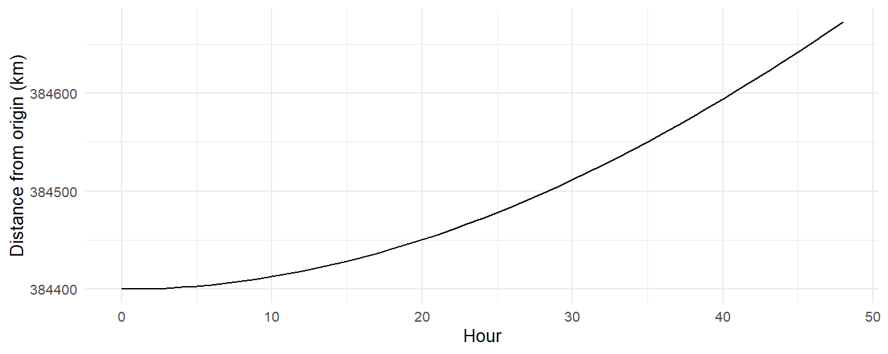

2 + 2
#> [1] 4Appendix A — R Basics
This appendix is for the reader who has never opened R. It covers the minimum needed to run and modify the code in this book: installing the software, running code, installing packages, and the small vocabulary of functions the chapters use over and over. It is deliberately brief. R is a large language and this book uses a narrow slice of it; the last section says where to go when you want the rest, and every book listed there is free online.
If you already use R, skip this. If you have used Python or MATLAB, skim it; most of what differs is in the sections on the pipe and on tibbles.
A.1 Installing R and RStudio
Two installs, in this order.
R is the language. Download it from https://cran.r-project.org: pick your operating system, then the “base” distribution on Windows or the .pkg installer on a Mac, and run the installer with its defaults. On Linux, use your distribution’s package manager (sudo apt install r-base on Ubuntu).
RStudio is the editor most people use, and the one this book assumes. Download the free desktop version from https://posit.co/download/rstudio-desktop/. (Positron, from the same company, is a newer alternative; either works.) When you open RStudio you will see four panes. The two that matter now are the Console at the bottom left, where you type a line of R and get an answer, and the Source pane above it, where you edit files.
Try the console. Type 2 + 2 next to the > prompt and press Enter:
The [1] means “this is the first element of the result,” which matters once results have more than one element, and they usually do.
A.2 Running code
Three ways, from quickest to most reusable.
- Console. Type and press Enter. Good for checking something.
- Script. File → New File → R Script gives you a text file ending in
.R. Type lines of code; press Ctrl+Enter (Cmd+Enter on a Mac) to run the line the cursor is on, or select several lines and press it to run them together. Save the file and you can rerun everything tomorrow. - Quarto or R Markdown document. A document that mixes text and code “chunks,” which is what this book is written in. File → New File → Quarto Document. Each chunk has a small green arrow to run it. This is the right format for a lab report, because the figures and numbers are regenerated from the code every time you render.
Lines starting with # are comments and are ignored. Assignment uses <-: x <- 3 stores the value 3 under the name x, and typing x afterward prints it. (= also works for assignment; <- is the convention and the book uses it.)
x <- 3
x * 2
#> [1] 6Everything in R is case-sensitive: mass_earth and Mass_Earth are different names, and only the first one exists.
A.3 Packages
R’s base installation is small on purpose. Almost everything useful, including orbitr, comes as a package, which you install once and load each session.
install.packages("orbitr") # once, downloads and installs (needs internet)
library(orbitr) # every session, makes the functions availableinstall.packages() takes the name in quotes; library() takes it bare (quotes work there too). If you call a function from a package you have not loaded, R says could not find function "simulate_system", and the fix is library(orbitr). Installing orbitr also installs dplyr and ggplot2, which the book uses for analysis and plotting; load them the same way. The preface’s “What you need” section has the full list, including how to get the development version from GitHub.
Two more things about packages. packageVersion("orbitr") tells you which version you have; this book needs 1.0.0 or later. And orbitr::simulate_system(), with the double colon, calls a function from a package without loading the whole package, which is why you will see tidyr::pivot_longer() in a few places in the book for a package that is used only once.
A.4 Getting help
?simulate_system opens the help page for a function: what it does, every argument and its default, and runnable examples at the bottom. This is the single most useful habit to form. Every function in orbitr has one, and Appendix C is a condensed index of them. For a package as a whole, its website (https://orbit-r.com for orbitr) has longer articles than the help pages.
When something goes wrong, read the error message from the top; the first line usually says what R could not do, and the rest is where it was when it failed. The three errors new users hit most are could not find function (load the package), object 'x' not found (you have not created x yet, or spelled it differently), and unexpected symbol or unexpected ')' (a typo: a missing comma, an extra bracket, mismatched quotes). RStudio’s editor underlines the last kind in red before you run it.
A.5 Functions and arguments
A function call is a name followed by parentheses with the inputs, called arguments, inside:
sqrt(16)
#> [1] 4
round(3.14159, digits = 2)
#> [1] 3.14Arguments can be matched by position or by name. round(3.14159, 2) and round(3.14159, digits = 2) are the same call. This book names arguments almost everywhere, because add_body("Moon", mass = mass_moon, x = distance_earth_moon, vy = speed_moon) is readable and the positional version is not. Arguments with defaults can be left out: add_body() has x, y, z, vx, vy, and vz all defaulting to 0, so you only mention the ones that are not zero.
Writing your own function is the same idea in reverse:
circular_speed <- function(mass, r, G = gravitational_constant) {
sqrt(G * mass / r)
}
circular_speed(mass_earth, distance_earth_moon)
#> [1] 1018.289The body runs with the arguments filled in, and the last value computed is returned. The book defines a dozen small functions like this; every one of them follows this pattern.
A.6 The pipe
Most of the book’s code is written as a chain:
create_system() |>
add_sun() |>
add_planet("Earth", parent = "Sun") |>
simulate_system(time_step = seconds_per_day, duration = seconds_per_year) |>
plot_orbits()The operator |> is the pipe. It takes the value on its left and passes it as the first argument of the function on its right, so x |> f(y) means f(x, y). The chain above is exactly
plot_orbits(simulate_system(add_planet(add_sun(create_system()), "Earth", parent = "Sun"),
time_step = seconds_per_day, duration = seconds_per_year))which says the same thing inside out and is why nobody writes it that way. Read a pipe top to bottom as a sequence of steps: create a system, add the Sun, add Earth, simulate, plot. Each function in orbitr takes the system or the simulation output as its first argument precisely so that it can sit in a chain like this.
You will see %>% in older code and in some of the books below; it is the same idea from the magrittr package, from before the pipe was built into R. |> needs R 4.1 or later, which is why the preface asks for it.
A.7 Vectors, data frames, and tibbles
A vector is a sequence of values of one type, built with c():
speeds <- c(1000, 1022, 1044)
speeds * 2
#> [1] 2000 2044 2088
speeds[2]
#> [1] 1022Arithmetic applies to every element at once, with no loop, and [2] picks the second element. Most of R works this way, which is why the book’s code has so few loops.
A data frame is a table: columns are vectors, all the same length, each with a name. A tibble is the modern data frame, from the tidyverse, with a tidier print method and fewer surprises. Everything orbitr returns is a tibble. The output of simulate_system() has one row per body per time step and the columns time, id, mass, x, y, z, vx, vy, vz:
sim <- create_system() |>
add_body("Earth", mass = mass_earth) |>
add_body("Moon", mass = mass_moon, x = distance_earth_moon, vy = speed_moon) |>
simulate_system(time_step = seconds_per_hour, duration = seconds_per_day * 2)
sim
#> # A tibble: 98 × 9
#> id mass x y z vx vy vz time
#> <chr> <dbl> <dbl> <dbl> <dbl> <dbl> <dbl> <dbl> <dbl>
#> 1 Earth 5.97e24 0 0 0 0 0 0 0
#> 2 Moon 7.34e22 384400000 0 0 0 1022 0 0
#> 3 Earth 5.97e24 215. 0 0 0.119 0.000571 0 3600
#> 4 Moon 7.34e22 384382520. 3679200 0 -9.71 1022. 0 3600
#> 5 Earth 5.97e24 860. 4.11 0 0.239 0.00229 0 7200
#> 6 Moon 7.34e22 384330083. 7358065. 0 -19.4 1022. 0 7200
#> 7 Earth 5.97e24 1934. 16.5 0 0.358 0.00514 0 10800
#> 8 Moon 7.34e22 384242692. 11036262. 0 -29.1 1022. 0 10800
#> 9 Earth 5.97e24 3438. 41.1 0 0.477 0.00914 0 14400
#> 10 Moon 7.34e22 384120357. 14713454. 0 -38.8 1021. 0 14400
#> # ℹ 88 more rowsPrinting a tibble shows the first ten rows and the column types (<chr> is text, <dbl> is a number). nrow(sim) and names(sim) give the row count and the column names; sim$x pulls one column out as a plain vector; sim[sim$id == "Moon", ] picks rows by a condition. The dplyr verbs in the next section do the same things more readably, and the book uses them instead.
A.8 The six dplyr verbs the book uses
dplyr is the tidyverse package for working with tables, and the book uses six of its functions. Each takes a tibble as its first argument (so it sits in a pipe) and returns a tibble.
library(dplyr)
sim |>
filter(id == "Moon") |> # keep rows where this is true
mutate(r_km = sqrt(x^2 + y^2 + z^2) / 1e3) |> # add a column computed from others
select(time, r_km) |> # keep only these columns
arrange(desc(r_km)) |> # sort rows (desc = largest first)
slice_head(n = 3) # the first few rows
#> # A tibble: 3 × 2
#> time r_km
#> <dbl> <dbl>
#> 1 172800 384673.
#> 2 169200 384662.
#> 3 165600 384652.The one that takes a moment to learn is summarise() with group_by(): split the table into groups, then collapse each group to one row.
sim |>
group_by(id) |>
summarise(max_speed = max(sqrt(vx^2 + vy^2 + vz^2)),
n_steps = n())
#> # A tibble: 2 × 3
#> id max_speed n_steps
#> <chr> <dbl> <int>
#> 1 Earth 5.68 49
#> 2 Moon 1022 49Inside any of these, column names are used bare, without quotes or sim$: filter(id == "Moon"), not filter(sim$id == "Moon"). Comparisons use == for equals, != for not equals, and &, | for and, or. That is nearly all the dplyr in the book; inner_join(), which lines up two tables on a shared column, appears in a few chapters and is explained where it is used.
A.9 The ggplot2 the book uses
ggplot2 builds a plot in layers. You say which columns map to which visual properties (aes()), add a geometry layer that draws them, and keep adding with +:
library(ggplot2)
sim |>
filter(id == "Moon") |>
mutate(r_km = sqrt(x^2 + y^2 + z^2) / 1e3) |>
ggplot(aes(x = time / seconds_per_hour, y = r_km)) +
geom_line() +
labs(x = "Hour", y = "Distance from origin (km)")
Note the switch from |> to + once the plot starts: ggplot2 predates the pipe and uses + to add layers. The geometries the book uses are geom_line() (a line in order of \(x\)), geom_path() (a line in the order of the rows, which is what an orbit needs), geom_point(), and annotate("point", ...) for a single marker. aes(color = id) colors by a column and adds a legend automatically. facet_wrap(~ method) splits one plot into panels, one per value of a column. coord_equal() makes one meter on the \(x\) axis the same length as one meter on \(y\), without which circles come out as ellipses, and scale_y_log10() gives a logarithmic axis. labs() sets the labels and theme_minimal() the look. plot_orbits() returns a ggplot built this way, so anything here can be added to it.
A.10 Where to learn more
All of these are free to read online, and all are good.
- R for Data Science, by Hadley Wickham, Mine Çetinkaya-Rundel, and Garrett Grolemund (https://r4ds.hadley.nz). The standard introduction to the tidyverse: dplyr, ggplot2, tibbles, and the way of working this book assumes. If you read one other book, read this one; the first few chapters are enough.
- Hands-On Programming with R, by Garrett Grolemund (https://rstudio-education.github.io/hopr/). Shorter and more about the language itself: vectors, functions, loops, the things R4DS skips. Good if you want to understand why R behaves as it does.
- ggplot2: Elegant Graphics for Data Analysis, by Hadley Wickham, Danielle Navarro, and Thomas Lin Pedersen (https://ggplot2-book.org). The full account of the plotting system, from the people who wrote it. Read it when
plot_orbits()stops being enough. - R Graphics Cookbook, by Winston Chang (https://r-graphics.org). Recipes: “I want a plot that looks like this.” The fastest route to a specific figure.
- Advanced R, by Hadley Wickham (https://adv-r.hadley.nz). Not needed for this book. Read it when you start wanting to know what a function is.
- The Posit cheat sheets (https://posit.co/resources/cheatsheets/). One page each for dplyr, ggplot2, and RStudio; worth printing.
For the physics side, the references in the chapters and the Further Reading section at https://orbit-r.com do the same job.